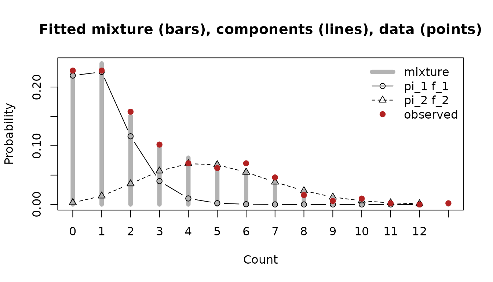
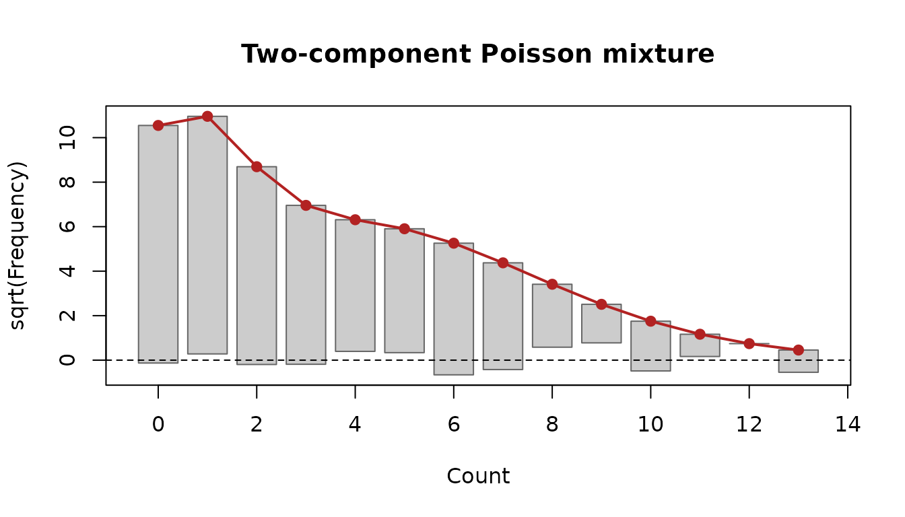

Finite mixtures of count distributions
Source:vignettes/finite-mixture-getting-started.Rmd
finite-mixture-getting-started.RmdThis article introduces finite mixtures of count distributions
without covariates: what they are, how to fit them with
countreg_mix(), how to read the fitted object, and what a
fitted mixture does and does not tell you. The regression and
latent-class version is in
vignette("latent-class-regression", package = "flexCountReg").
What a finite mixture is
A finite mixture with components draws an unobserved component with probabilities and then draws one count from that component’s distribution:
Four ideas are easily confused:
- Finite mixture. A probability-weighted sum of distributions, as above. It can be used purely as a flexible description of a skewed, multimodal or heavy-tailed count distribution.
- Latent-class interpretation. The same model, read as saying that the population consists of unobserved groups. That reading is an extra substantive assumption; the likelihood is identical, and a good fit with two components does not prove that two real groups exist.
- Convolution (a sum of counts). Adding independent counts from two distributions, e.g. , gives a different distribution. A mixture selects one component; a convolution adds them.
- Within-family (continuous) mixing. Families such as PLN, PGE and NBGE are themselves Poisson distributions mixed over a continuous random effect (see count_families). A two-component PLN mixture has two outer components, each of which already contains continuous mixing. Stacking both kinds of heterogeneity can make the parameters weakly identified.
Simulated data
We simulate 500 counts: 60% from a Poisson distribution with mean 1 and 40% from a Poisson distribution with mean 5, using only base R.
set.seed(2026)
n <- 500
true_class <- ifelse(runif(n) < 0.6, 1, 2)
y <- rpois(n, lambda = c(1, 5)[true_class])
d <- data.frame(y = y)
table(y)
#> y
#> 0 1 2 3 4 5 6 7 8 9 10 11 13
#> 114 114 79 51 35 31 35 23 8 3 5 1 1
c(mean = mean(y), variance = var(y))
#> mean variance
#> 2.512000 6.013884The generating classes are kept aside (true_class); they
are not used in fitting. The variance is well above the mean, as it must
be for a mixture of Poisson distributions with different means.
Mean and variance of a mixture
For a mixture, the mean and variance are
For the generating model (, means 1 and 5, Poisson variances equal to the means) this gives:
p <- c(0.6, 0.4)
m_k <- c(1, 5)
m <- sum(p * m_k)
V <- sum(p * (m_k + m_k^2)) - m^2
c(mean = m, variance = V)
#> mean variance
#> 2.60 6.44The variance is the within-component variance plus the between-component variance . A mixture of Poisson distributions is therefore always at least equidispersed; mixtures of underdispersed families need not be.
Fitting a two-component Poisson mixture
countreg_mix() uses the formula interface of
countreg(). For a mixture without covariates the formula is
y ~ 1.
fit2 <- countreg_mix(y ~ 1, data = d, family = "POISSON", components = 2,
n_starts = 5, seed = 42)
summary(fit2)
#> Call:
#> countreg_mix(formula = y ~ 1, data = d, family = "POISSON", components = 2,
#> n_starts = 5, seed = 42)
#>
#> Finite-mixture count model with 2 components
#> Component 1: POISSON
#> Component 2: POISSON
#> Mixing: constant proportions (reference: Component 2)
#> Optimizer: BFGS + Newton-Raphson refinement | gradient close to zero (gradtol)
#>
#> Coefficients (standard errors: observed information (Hessian)):
#>
#> Component 1 (POISSON):
#> Estimate Std. Error z value Pr(>|z|)
#> Component1:Mean:(Intercept) 0.0278 0.0920 0.3 0.76
#>
#> Component 2 (POISSON):
#> Estimate Std. Error z value Pr(>|z|)
#> Component2:Mean:(Intercept) 1.5833 0.0512 30.9 <2e-16 ***
#> ---
#> Signif. codes: 0 '***' 0.001 '**' 0.01 '*' 0.05 '.' 0.1 ' ' 1
#>
#> Mixing (multinomial logit):
#> Estimate Std. Error z value Pr(>|z|)
#> Mixing:Component1:(Intercept) 0.464 0.157 2.96 0.0031 **
#> ---
#> Signif. codes: 0 '***' 0.001 '**' 0.01 '*' 0.05 '.' 0.1 ' ' 1
#>
#> Component sizes:
#> label family prior posterior effective_n modal_n mean_count
#> Component1 POISSON 0.6139 0.6139 306.9 307 1.028
#> Component2 POISSON 0.3861 0.3861 193.1 193 4.871
#> (prior: mean membership probability; posterior: mean posterior probability;
#> effective_n: sum of posterior probabilities; modal_n: units whose most
#> probable component it is; mean_count: average expected count)
#>
#> Log-likelihood: -1032.167 | AIC: 2070.334 | BIC: 2082.978 | ICL: 2344.071
#> N: 500
#> Entropy: 130.547 | relative entropy: 0.623
#> Starts: 5 | 5 reached the selected log-likelihood
#> Observed information: positive definite (condition number 19.9 ) | max |gradient|: 7.72e-07
#> No likelihood-ratio test of the number of components is reported (non-standard distribution).The component intercepts are on the log scale, so the estimated
component means are exp() of them; the mixing coefficient
is the log odds of component 1 against the reference (the last)
component. Same-family components are exchangeable, so after fitting
they are numbered in increasing order of their mean (a display
convention).
cf <- coef(fit2)
exp(cf[c("Component1:Mean:(Intercept)", "Component2:Mean:(Intercept)")])
#> Component1:Mean:(Intercept) Component2:Mean:(Intercept)
#> 1.028158 4.870993
plogis(cf["Mixing:Component1:(Intercept)"])
#> Mixing:Component1:(Intercept)
#> 0.6138679
fit2$model$classes[, c("label", "prior_share", "effective_size",
"mean_count")]
#> label prior_share effective_size mean_count
#> Component1 Component1 0.6138679 306.9339 1.028158
#> Component2 Component2 0.3861321 193.0661 4.870993The same fitted model gives the mean and variance of the mixture directly, and they can be checked against the formulas above using the estimates:
nd <- data.frame(y = 0)
c(mean = unname(predict(fit2, newdata = nd, type = "response")),
variance = unname(predict(fit2, newdata = nd, type = "variance")))
#> mean variance
#> 2.512000 6.012373
p_hat <- fit2$model$classes$prior_share
m_hat <- predict(fit2, newdata = nd, type = "component")[1, ]
c(mean = sum(p_hat * m_hat),
variance = sum(p_hat * (m_hat + m_hat^2)) - sum(p_hat * m_hat)^2)
#> mean variance
#> 2.512000 6.012373Starts
Mixture likelihoods often have several local maxima, so
countreg_mix() starts from several preliminary partitions
of the data (reproducible from seed), improves each by the
EM algorithm and polishes the best distinct solutions by maximizing the
observed-data likelihood directly. The start table records every
attempt:
fit2$model$starts[, c("start", "strategy", "em_iterations", "em_status",
"loglik_start", "polished", "loglik", "reached_best",
"selected")]
#> start strategy em_iterations em_status loglik_start polished loglik
#> 1 1 quantile 24 converged -1032.167 FALSE NA
#> 2 2 jitter 23 converged -1032.167 FALSE NA
#> 3 3 random 26 converged -1032.167 FALSE NA
#> 4 4 jitter 24 converged -1032.167 TRUE -1032.167
#> 5 5 random 28 converged -1032.167 FALSE NA
#> reached_best selected
#> 1 TRUE FALSE
#> 2 TRUE FALSE
#> 3 TRUE FALSE
#> 4 TRUE TRUE
#> 5 TRUE FALSEA solution reached from several different starts is more trustworthy than one found once. It is still not a proof that the maximum is global.
Raw counts and a frequency table give the same fit
Without covariates, the data are fully described by the frequency of
each count. Fitting the frequency table with weights gives
exactly the same likelihood, because the frequency multiplies the
log-likelihood of each distinct count outside the logarithm of
the mixture.
tab <- as.data.frame(table(y), stringsAsFactors = FALSE)
tab$y <- as.numeric(tab$y)
head(tab)
#> y Freq
#> 1 0 114
#> 2 1 114
#> 3 2 79
#> 4 3 51
#> 5 4 35
#> 6 5 31
fit2_tab <- countreg_mix(y ~ 1, data = tab, weights = "Freq",
family = "POISSON", components = 2,
n_starts = 5, seed = 42)
c(raw = logLik(fit2), table = logLik(fit2_tab))
#> raw table
#> -1032.167 -1032.167
all.equal(coef(fit2), coef(fit2_tab), tolerance = 1e-5)
#> [1] TRUE
c(raw = BIC(fit2), table = BIC(fit2_tab))
#> raw table
#> 2082.978 2082.978BIC also agrees, because the number of independent units is the sum of the frequencies. This compression is valid only because nothing but the count differs between the compressed rows. With covariates or different exposures, rows can be combined only when all of their model inputs agree.
Plotting the fitted distribution
predict(type = "prob") returns the mixture probabilities
on a finite grid; overflow = TRUE adds the probability of
the tail beyond the grid, so nothing is silently dropped. The weighted
contributions
of the components add up to the total. (Each
alone sums to one; the weighted contributions sum to
.)
max_count <- 12
P <- predict(fit2, newdata = nd, type = "prob", max_count = max_count,
overflow = TRUE)
round(P, 4)
#> 0 1 2 3 4 5 6 7 8 9
#> [1,] 0.2225 0.2402 0.1512 0.0968 0.0797 0.0697 0.0553 0.0383 0.0233 0.0126
#> 10 11 12 >12
#> [1,] 0.0061 0.0027 0.0011 6e-04
grid <- 0:max_count
contrib <- sapply(1:2, function(k) p_hat[k] * dpois(grid, m_hat[k]))
all.equal(rowSums(contrib), unname(P[1, seq_along(grid)]))
#> [1] TRUE
obs <- as.vector(table(factor(pmin(y, max_count + 1),
levels = 0:(max_count + 1)))) / n
plot(c(grid, max_count + 1), P[1, ], type = "h", lwd = 6, col = "grey70",
xaxt = "n", xlab = "Count", ylab = "Probability",
ylim = c(0, max(P, obs, contrib)),
main = "Fitted mixture (bars), components (lines), data (points)")
axis(1, at = c(grid, max_count + 1),
labels = c(grid, paste0(">", max_count)))
lines(grid, contrib[, 1], type = "b", pch = 1, lty = 1)
lines(grid, contrib[, 2], type = "b", pch = 2, lty = 2)
points(c(grid, max_count + 1), obs, pch = 19, col = "firebrick")
legend("topright", c("mixture", "pi_1 f_1", "pi_2 f_2", "observed"),
lty = c(1, 1, 2, NA), lwd = c(6, 1, 1, NA), pch = c(NA, 1, 2, 19),
col = c("grey70", "black", "black", "firebrick"), bty = "n")
The last bar is the tail bin . Note that the component curves are weighted contributions; they are not the probabilities of class membership given a count. Those posterior probabilities are a different quantity:
post <- component_probs(fit2, conditioning = "posterior")
round(cbind(y = y, post)[order(y)[c(1, 250, 350, 450, 500)], ], 3)
#> y Component1 Component2
#> [1,] 0 0.987 0.013
#> [2,] 2 0.768 0.232
#> [3,] 3 0.411 0.589
#> [4,] 6 0.007 0.993
#> [5,] 13 0.000 1.000A rootogram compares observed and expected frequencies over all rows:
rootogram(fit2, main = "Two-component Poisson mixture")
Comparing numbers of components
A one-component Poisson model, an NB2 model and the two-component mixture are compared on the same rows with information criteria:
fit1 <- countreg_mix(y ~ 1, data = d, family = "POISSON", components = 1)
nb2 <- countreg(y ~ 1, data = d, family = "NB2", method = "BFGS")
fit3 <- countreg_mix(y ~ 1, data = d, family = "POISSON", components = 3,
n_starts = 5, seed = 42)
data.frame(model = c("Poisson", "NB2", "2 Poisson components",
"3 Poisson components"),
logLik = sapply(list(fit1, nb2, fit2, fit3), logLik),
df = sapply(list(fit1, nb2, fit2, fit3),
function(m) length(coef(m))),
AIC = sapply(list(fit1, nb2, fit2, fit3), AIC),
BIC = sapply(list(fit1, nb2, fit2, fit3), BIC))
#> model logLik df AIC BIC
#> 1 Poisson -1170.078 1 2342.157 2346.371
#> 2 NB2 -1040.967 2 2085.934 2094.363
#> 3 2 Poisson components -1032.167 3 2070.334 2082.978
#> 4 3 Poisson components -1031.950 5 2073.901 2094.974
fit3$model$classes[, c("label", "prior_share", "mean_count")]
#> label prior_share mean_count
#> Component1 Component1 0.03284512 2.046596e-05
#> Component2 Component2 0.59408926 1.127026e+00
#> Component3 Component3 0.37306562 4.938665e+00No likelihood-ratio p-value is given for the number of components.
The usual chi-square reference distribution does not apply when
comparing
with
components: under the smaller model, the extra component’s proportion is
at the boundary (zero) or its parameters are not identified, which
breaks the regularity conditions of the test. regCompTest()
refuses mixture models for this reason. Use information criteria on the
same sample, the stability of the solution across starts and,
preferably, held-out log scores (see
vignette("predictive-validation", package = "flexCountReg")).
Also look at what an extra component does. Here the third component has
a share of about 3% and an expected count of practically zero: it is a
boundary solution (a mean parameter heading to zero) that adds a little
probability at zero, improves the log-likelihood by a fraction of a unit
and is rejected by both AIC and BIC. Such a component is a symptom of
overfitting, not a discovered group.
Known mixing proportions
Sometimes the proportions are known from outside the data, for
example from a design (a sample deliberately drawn as 60% from one
source and 40% from another) or from a census of the population being
sampled. They can then be fixed with fixed_mixing; they are
not estimated and add no parameters:
fit_fixed <- countreg_mix(y ~ 1, data = d, family = "POISSON",
components = 2, fixed_mixing = c(0.6, 0.4),
n_starts = 3, seed = 1)
coef(fit_fixed)
#> Component1:Mean:(Intercept) Component2:Mean:(Intercept)
#> 0.006919071 1.571634562
fit_fixed$model$classes[, c("label", "prior_share", "posterior_share")]
#> label prior_share posterior_share
#> Component1 Component1 0.6 0.6047197
#> Component2 Component2 0.4 0.3952803
c(df_estimated = length(coef(fit2)), df_fixed = length(coef(fit_fixed)))
#> df_estimated df_fixed
#> 3 2Known proportions are not frequency weights (which say how many independent copies a row represents) and not starting values. They should never be taken from a previous fit’s posterior classification of the same data: that would use the data twice and understate uncertainty.
Limitations
- A mixture with components can describe a skewed or heavy-tailed distribution without the components corresponding to real groups. Interpreting components as subpopulations needs external evidence.
- Components with similar means and small shares are weakly
identified; their standard errors (from the observed information) may be
unreliable. Check
fit$model$numerical, the start table and, if needed, bootstrap standard errors (stderr = "boot"). - Only the Poisson, NB1 and NB2 families are marked as validated
mixture components. Other families can be used as components, but
recovery of such mixtures has not been studied
(
countreg_mix()says so with a message).
Reproducibility
Every random step uses the seed argument, and the seed
of every start is stored in fit$model$starts, so the fits
above are reproduced exactly by re-running the code. The settings used
are stored in fit$model$settings and
fit$model$control.
Next steps:
-
vignette("latent-class-regression", package = "flexCountReg")for covariates, class-membership models and panels. -
vignette("choosing-a-count-distribution", package = "flexCountReg")for single-component alternatives. -
vignette("numerical-reliability", package = "flexCountReg")for reading convergence and information diagnostics.